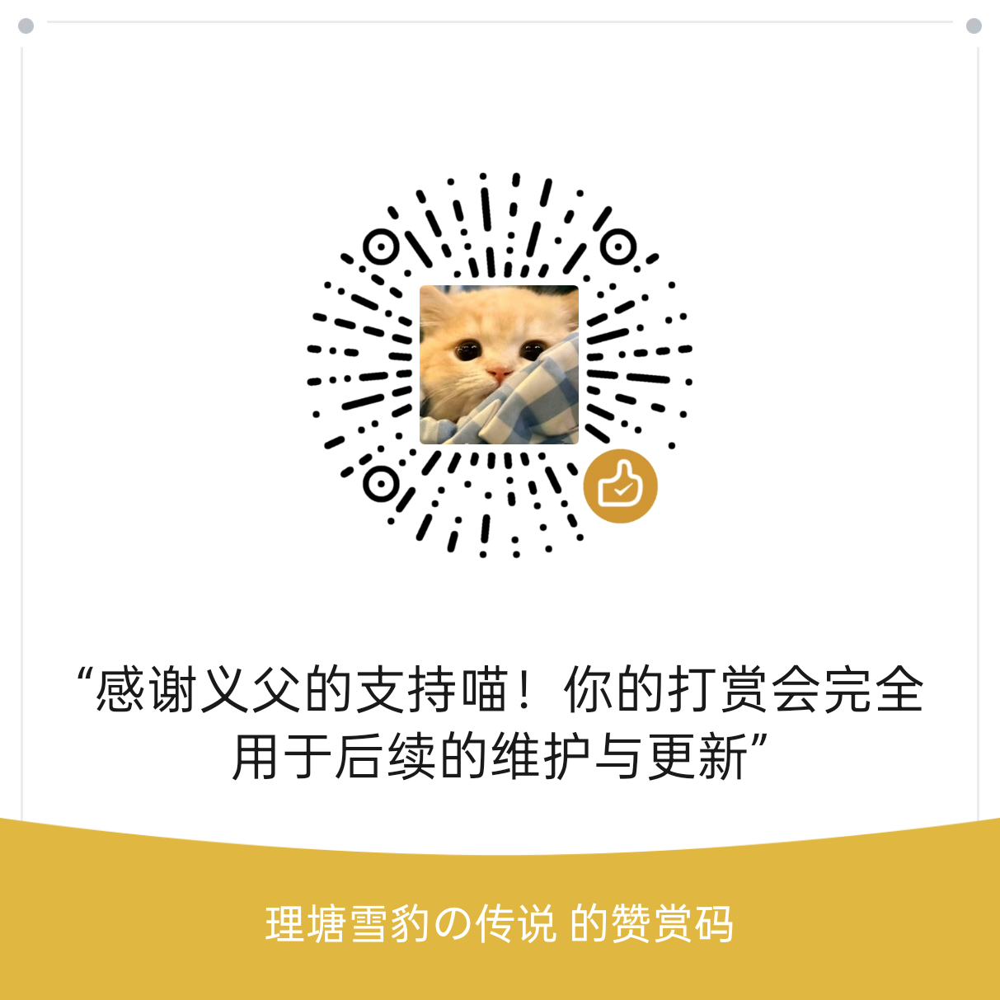

选择素材
拖入图片、视频或文件夹，输出目录和文件名自动生成。
从素材到成品
应用会明确告诉你环境是否准备完成、正在使用哪张显卡，以及当前处理到哪一步。
拖入图片、视频或文件夹，输出目录和文件名自动生成。
选择图片超分、视频超分、视频补帧或超分并补帧。
自动检测图形设备并优先选择高性能设备，也支持手动调整。
查看总进度和当前阶段，失败时可复制日志或导出诊断信息。
四种核心任务
提高原图分辨率并增强可见细节，适合截图、插画、封面和低分辨率图片。
逐帧增强视频画面，再重新合成为高分辨率视频，让低清素材拥有更多细节。
通过 RIFE 生成中间帧，提高动作、镜头移动和游戏录制画面的流畅度。
先提升清晰度，再生成中间帧，一次完成分辨率与流畅度增强。
V2.1 更新说明
V2.1 完善界面表现、格式转换、处理性能与输出控制，并进一步减少异常失败。
修复窗口拉伸、设置展开和最大化时的界面问题，并新增玻璃质感风格。
新增视频与图片格式转换功能，常用素材可以直接在应用内完成转换。
进一步提升显卡利用率和处理速度，为高性能显卡提供更积极的性能释放。
支持自定义超分尺寸、补帧帧率，以及单个素材的输出文件名。
移除图片约 1.78 亿像素的固定限制，更灵活地处理大尺寸图片。
优化设备检测、错误提示和任务校验，减少误报与异常失败。
在“支持 SLV”板块中新增官方网站和 GitHub 入口。
真实图片示例
网页会缩放图片，放大图片或下载以查看实际效果。
当前版本
选择适合你的下载线路，获取 SnowLeopard Vision V2.1 正式版或历史版本。
国内用户建议使用迅雷、夸克、百度网盘下载。安装包与免安装压缩包根据需求选择一个即可。使用 VPN 的用户也可以通过 GitHub 下载。
如需旧版兼容或回退，可在这里获取 SnowLeopard Vision 以前发布的版本。
支持 SLV
如果 SLV 确实帮助到了你，并期待后续功能开发、兼容性优化与维护，可以自愿支持作者。无论捐赠与否，都不影响任何功能使用。并在此郑重感谢所有捐赠过 SLV 的义父们！！！
♡ 每一份支持都会用于继续打磨稳定性和使用体验。

使用与版权声明
用户需确保输入素材拥有合法处理、修改、导出和发布权限。AI 超分与补帧不会改变原素材版权归属，也不得用于规避版权保护、传播违法内容或侵犯他人权益。
本软件只提供本地处理流程，不提供素材、不破解版权保护、不内置影视资源。本页面不构成法律意见。
FFmpeg 采用 GNU LGPL 2.1 或更高版本许可；包含 GPL 组件的构建受 GPL 约束。
版权归其作者所有，Real-ESRGAN 采用 BSD 3-Clause 许可。
版权归各自作者所有，SnowLeopard Vision 调用随软件提供的本地组件。
版权归各自作者所有，Anime4KCPP 提供本应用调用的本地命令行实现。
rife-ncnn-vulkan 采用 MIT 许可，并使用 ncnn 与源自 RIFE 项目的模型。